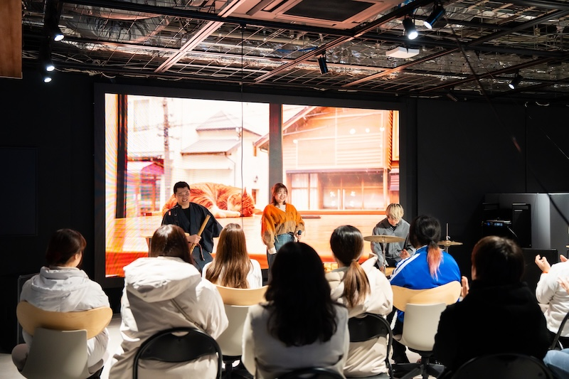
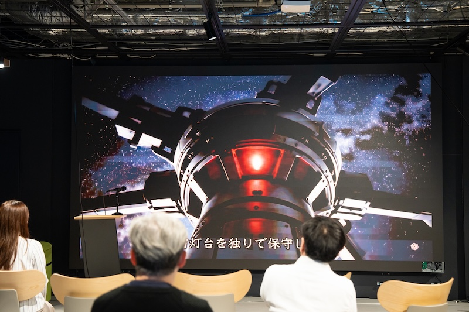
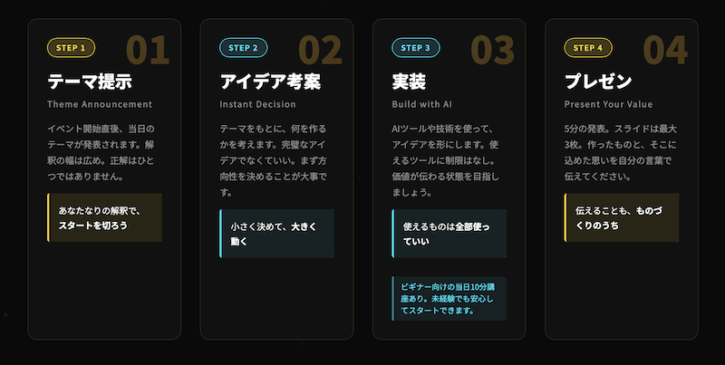

YouTube
YouTube
AI Short Film
宇宙灯台守 A space lighthouse keeper
宇宙で一人孤独に灯台を守り続ける老人の物語。全編AI生成の実写映画です。
Play embedded video →| 日付 | 種別 | 機関・学部 | 授業名 | 内容 | 対象 | 人数 | 形式 | 参考リンク |
|---|---|---|---|---|---|---|---|---|
| 2026年7月10日 | 学会発表 | 北方森林学会 （北海道大学農学部森林科学科主催） |
2026年度 北方森林学会 春季行事 | 動画生成AIの活用可能性 | 大学講師・林業系会社員 | 30名 | 現地講義・実演 | 写真 開催案内 |
| 2025年6月17日 | 大学講義 | 北海道大学 経済学部 |
経済学特別講義 | 生成AI活用講義 | 大学2〜3年生 | 30名 | 現地講義 | 配布用プロンプト 写真 |
| 2025年6月3日 | 大学講義 | 北海道大学 工学部 |
情報エレクトロニクス特別演習 | アジャイル体験 | 大学1〜3年生 | 43名 | 現地講義 ワークショップ |
- |
| 2025年5月9日 | 大学講義 | 小樽商科大学 商学部 |
システム戦略論 | 実践AI Agent | 大学1〜2年生 | 30名 | オンライン講義 | - |
| 日付 | 種別 | 機関・学部 | 授業名 | 内容 | 対象 | 人数 | 形式 | 参考リンク |
|---|---|---|---|---|---|---|---|---|
| 2026年7月1日 | 高校講義 | 北海道小樽水産高等学校 情報通信科 VR研究班 |
Deep Tech Core Sapporo施設見学・AI体験 | AIアニメ鑑賞・AI音楽生成・プロンプト生成講座 | 高校1〜2年生・教員 | 3名 | 現地体験授業 | note記事 |
| 2026年3月10日 | 高校講義 | 北海道立阿寒高等学校 | AI活用授業（情報学１、情報処理） | AIサムライ道場〜今日から君もチート武器使い〜 | 高校1〜2年生（全校生徒） | 31名 | 現地講義 | Zenn記事 釧路新聞 写真 |
| 2026年2月17日 | 研修 | 北海道立阿寒高等学校 | 令和7年度 第4回校内研修 | 先生の授業スタイルを活かしながらAIで生徒の反応を最大化する方法 | 高校教員 | 14名 | オンライン講義 | Zenn記事 |
| 2025年2月19日 | ワークショップ | 技育CAMPアカデミア | 生成AIで今日からキミも〇〇〇！ | 次世代システム運用保守 | 大学1〜4年生 | 34名 | オンライン講義 | イベントページ |

無料で学べるAI e-learning。登録不要で今すぐ始められる。
Learn AI →
市民がAIを学び、つくり、発表する。札幌発の参加型イベント。
View Event →
AIの面白さを共有するコミュニティ。勉強会・イベントを定期開催。
View Events →
札幌現地で全員上映をコンセプトにした、クリエイターのためのAI映画祭。
View Event →
2時間で世界を作れ。AI駆動開発を中核としたハッカソン。
View Event →| 日付 | メディア | タイトル | 参考リンク |
|---|---|---|---|
| 2026年7月11日 | コロテックAIアニメ | コロテック、ノミネート全50作品を発表&キービジュアルを公開 | リンク |
| 2026年7月8日 | 北海道小樽水産高等学校公式note | 施設見学”Deep Tech Core Sapporo”様にお邪魔しました！ | リンク |
| 2026年7月7日 | 株式会社EQUES広報サイト | 北海道・札幌市に新拠点「EQUES札幌オフィス」開設のお知らせ | リンク |
| 2026年4月4日 | 釧路新聞 | チャットＧＰＴで画像制作 阿寒高、講師招きＡＩ活用授業【釧路市】 | リンク |
| 2026年4月1日 | 侍エンジニア | 北海道の生成AIイベントおすすめ6選【口コミから厳選】 | リンク |
| 2026年3月7日 | J:COM | "ジモトのイチバン"を生中継！「ジモトピLIVE 」【札幌のデジタル技術の未来がココにある!?】 | リンク |
| 2026年2月16日 | 北海道新聞 | 人とAI、音楽で融合 札幌でまつり | リンク |
| 2026年2月10日 | 北海道新聞 | AI愛好者の交流会を設立した 岸本悠佑（きしもと・ゆうすけ）さん | リンク |
| 2026年2月2日 | 北海道新聞 | 札幌の有志がAIイベント 15日初開催 子どもも楽しめる展示も | リンク |
| 順位 | タイトル | PV | リンク |
|---|---|---|---|
| 1位 | AIが「パワポ作り」を奪った日。NotebookLMが10分でプロ級スライドを量産する世界へ | 52,004 | リンク |
| 2位 | ついにキタ！NotebookLMのスライドを「編集可能パワポ」に変換する最強ツール「Kirigami」 | 46,513 | リンク |
| 3位 | Sora2 でウォーターマークを消す方法（公式＆非公式） | 27,205 | リンク |
| 4位 | ついに編集できる！NotebookLMスライドの細部を直す実践テク（文字・イラスト） | 23,048 | リンク |
| 5位 | gpt-ossがすごい！！ローカルで120bと20bを動かしてみた（Mac、メモリ128GB） | 14,674 | リンク |
| 6位 | Intel Mac→Mシリーズに移行した人が必ずハマるポイント | 12,717 | リンク |
| 7位 | Sora2 でカメオ機能を使う方法 | 11,820 | リンク |
| 8位 | NotebookLMのスライド生成数の上限は？（課金＆非課金の比較） | 11,522 | リンク |
| 年月 | 出来事 | 詳細 |
|---|---|---|
| 2026.6 | 札幌すごいAI大会 開催 | 札幌すごいAI映画祭・札幌すごいAIハッカソンを同日開催 |
| 2026.5 | 札幌すごいAI会 Discordコミュニティ拡大 | 200名超に成長 |
| 2026.2 | 札幌すごいAI会 Discordコミュニティ拡大 | 150名超に成長 |
| 2026.2 | 札幌すごいAIまつり 開催 | 市民発の、AIを学び、挑み、楽しむAIの総合フェス |
| 2025.12 | すごいAI道場 公開 | 無料・登録不要で誰でもAI活用を学習できるウェブサイト |
| 2025.12 | 札幌すごいAI会 Discordコミュニティ運営開始 | 1ヶ月で104名超のオンラインコミュニティに成長 |
| 2025.3 | 札幌すごいAI会 発足 | 「AIってすごい、を体感し、分かち合う。」をコンセプトとした市民団体 |
YouTube
宇宙で一人孤独に灯台を守り続ける老人の物語。全編AI生成の実写映画です。
Play embedded video → YouTube
YouTube
魔法使いピリカの挫折と成長の物語。人気ウェブ小説（作者 Koh）の原作を、AIで魔法バトルアニメ化した作品。
 YouTube
YouTube
2026年度北方森林学会春季行事にて投影された、生成AIによる映像作品。北海道の森に暮らす生き物たちを描く。
Play embedded video → YouTube
YouTube
2026年度北方森林学会春季行事にて投影された、生成AIによる映像作品。林業分野での動画生成AI活用を提示。
Play embedded video → YouTube
YouTube
AIスタートアップ・株式会社EQUESの札幌進出を描いた、生成AI制作のCM映像。
Play embedded video →| 年月 | 会社・学校・団体 | 役職 | 職務内容 |
|---|---|---|---|
| 2026年7月 | 株式会社EQUES | 北海道支社長 | 拠点立ち上げ・企画・コンサルティング・営業 |
| 2024年9月 | アクセンチュア株式会社 | シニアアナリスト | RPA開発・AI教育普及活動 |
| 2021年4月 | パーソルプロセス＆テクノロジー株式会社 | ユニットリーダー | RPA開発・プロジェクトマネジメント・新規サービス企画 |
| 2019年3月 | 北海道大学 理学部 生物科学科 | - | 卒業（学士） |
| 2014年3月 | 埼玉県立浦和高校 普通科 | - | 卒業 |